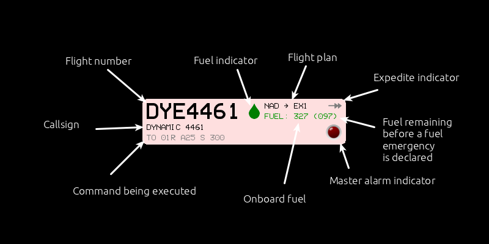

Flight progress strips¶
Flight progress strips are what is used by air traffic controllers to keep track of the aeroplanes they are following on radar. While the aeroplane images and their tags on the radar screen give positional information on each aircraft (and are therefore essential for keeping separation), the flight progress strips provide information useful for planning the course of each aeroplane.
Anatomy of a strip¶
Flight strips are very dense when it comes to amount of information displayed.
Here is some details on each information on the strip. In clockwise order:
Colour
The colour of the strip indicates weather the final destination of an aeroplane is an airport (green) or a gate (red).
Flight number
Flight numbers are the unique identifier of each flight. The first three letters identify the air carrier using its ICAO code.
Fuel indicator
The fuel indicator is a quick way to know if the amount of fuel onboard is adequate to complete the flight plan. The colour of the drop follows the usual green / yellow / red scheme, in which green means “more than enough”, yellow “just enough” and red “dry tank”.
Flight plan
The flight plan shows the point of origin and the destination of the aeroplane. In other words: your task is to guide your plane safely to the point indicated by the second alphanumeric group.
Expedite indicator
Aeroplane may be instructed to perform certain commands (such altering speed, altitude or heading) ad double their normal rate by using the EXPEDITE flag and at the cost of burning fuel at double the speed. If an aeroplane is performing a manoeuvre at such rate, this arrow indicator will lit in orange.
Fuel before emergency
If you familiarised yourself with the way Fuel is handled in ATC-NG, you will know that when the fuel onboard the aeroplane is less than twice that needed to complete its task, the pilot will declare a fuel emergency, requesting a priority landing. The number between parenthesis shows how many fuel units can still be used before the aeroplane enters that emergency.
Please note that this number will decrease very quickly if the plane is moving away from its destination, and could even increase if the plane is flying towards its destination.
Master alarm indicator
This indicator will lit in bright red in case the plane is facing a major problem, such as an imminent collision or having ran out of fuel.
Onboard fuel
This number indicates how much fuel is still available on the aeroplane. The way fuel is handled in ATC-NG is explained in details in the Fuel section of the manual.
Command being executed
If the aircraft the strip is referring to is presently executing a command, here is where that command will be shown. Long commands are reported here using their shorthand notation. You may learn more about the alternative spelling of commands in the aeroplane commands section of the manual.
Call sign
If the air carrier has been assigned a call sign, that is how the pilot will identify themselves over radio (on the console). This is were you can check what call sign the pilot will use.
Strips handling¶
Flight progress strips can be handled through the /SORT command in a variety of ways.
The idea is that the order of the strips should help the air traffic controller following an orderly routine, always processing the strip at the bottom of the stack first.
There is no single correct way to sort the strips. According to playing style, scenario, number of planes, radar range, etc... a different order might be more advisable than another.